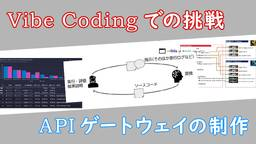

IIJ Engineers Blog
https://eng-blog.iij.ad.jp
IIJ Engineers Blogは、開発・運用の現場から、IIJのエンジニアが技術的な情報や取り組みについて 執筆する公式ブログです。
フィード
IIJ須賀祐治、情報処理学会「2024年度学会活動貢献賞」を受賞 2
2
IIJ Engineers Blog
IIJ Engineers blog 編集部です。 情報処理学会「2024年度学会活動貢献賞」を、IIJ須賀祐治が受賞しました。この賞は、情報処理学会の特定分野の運営、または会員サービスの向上等に関し...
2日前
暗号化されたDNSサーバの探索 4
IIJ Engineers Blog
通信のプライバシを守るために、DNSのトラフィックも暗号化されるようになってきました。具体的には、以下のようなプロトコルを用いて、DNSの通信を暗号化します。 DoT(DNS over TLS): R...
3日前
JANOG56のNOC、準備着々と！ 2
IIJ Engineers Blog
IIJの井上です。九州支社でネットワークのエンジニアとして働いています。 本業の傍らで大事なお仕事を進めております。それがJANOG56のNOCチームのとりまとめです。 JANOG56ではIIJがホス...
4日前

Vibe Coding での挑戦、APIゲートウェイの制作 3
IIJ Engineers Blog
みんな大好き（？）Vibe Coding 最近よく聞くようになりました、Vibe Codingという言葉。雰囲気コーディングともいうそうです。 「人間が音声やテキストで指示を出し、AIが主体となってコ...
5日前
IIJの社員が読みたい本ってどんな本（IIJ図書館） 22
IIJ Engineers Blog
IIJ社内には、社員が社内で自主的に運用する「IIJ図書館」があります。 IIJ図書館では、置いてほしい本の希望を社内で募り、投票で上位となった本を会社の費用で購入する「みんなの読みたい本を買いましょ...
6日前

JANOG56配信準備レポート：IIJ × Jストリーム × 学生チームで挑むストリーミング
IIJ Engineers Blog
2025年7月30日（水）～8月1日（金）に島根県松江市で開催されるネットワーク技術者の祭典「JANOG56」。 今回のホストを務めるのは、私たち 株式会社インターネットイニシアティブ(IIJ)です。...
9日前
Starlinkを使ったPrisma Access（クラウド型セキュリティプラットフォーム）への接続検証
IIJ Engineers Blog
背景 Prisma Accessの足回りとしてフレッツなどのブロードバンド回線と同じくStarlinkも足回りとして利用できないかを IIJグローバルの小岩雄一が IIJエンジニアリング本社（東京都千...
10日前
JANOG56には新型やくもで松江へGO！JANOGer向けに車両を貸し切ってみた件
IIJ Engineers Blog
どうも、IIJの広島在住のimachanです。 JANOG56松江開催まで約1ヵ月となりました。 準備でバタバタですが、ホストとして盛り上げられるよう全力を尽くします！！ 前回はJANOG56でIIJ...
10日前
グランプリ受賞！「Ditto」が Interop Tokyo 2025「Best of Show Award」で栄冠！
IIJ Engineers Blog
2025 年 6 月 11 日～13 日に幕張メッセで開催されたイベント「Interop Tokyo 2025」にて、IIJ が出展した「Ditto」が、「Best of Show Award（IoT...
18日前
PTP 高精度時刻同期サービスを始めました
IIJ Engineers Blog
今回はIIJのグループ会社である、IIJエンジニアリングの土屋がサービスの裏話について執筆してくれた内容を紹介します。 サービス開発にあたり PTPをNTPのように使いたい！と思っても、そう簡単には導...
19日前